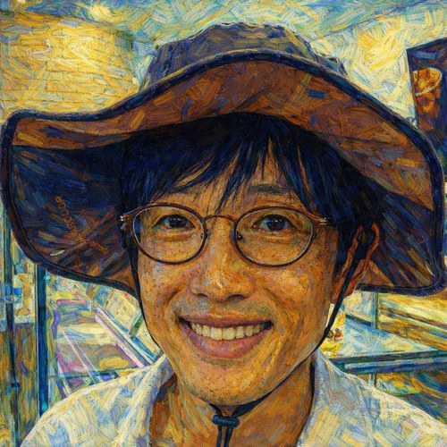

About
Goangseup Zi

Professor
School of Civil, Environmental and Architectural Engineering
Korea University
I am a professor of civil and structural engineering at Korea University.
My background is in structural engineering and mechanics, with research interests spanning structural and computational mechanics, fracture and damage, offshore structures and offshore wind energy, structural durability, and the digital transformation of engineering information.
Although these subjects may appear quite different, the questions that interest me are often similar:
What is the mechanics behind an observed engineering result, and how can we understand it well enough to use it?
This question has led me from fracture mechanics and nonlinear computational methods to offshore wind structures, stretchable electronic devices, engineering decision-making, and more recently the use of AI and structured engineering knowledge.
Engineering education is also an important part of my work. I am particularly interested in making mechanics more intuitive by connecting equations to their underlying physical meaning.
Why I Created Zi-SEM
Academic papers are necessary for documenting research, but they are not always the best place to explain how an engineering idea developed.
A paper must be concise. It assumes substantial background knowledge. It often emphasizes what was done and what was obtained, while leaving less room for questions such as:
- Why did we investigate this problem in the first place?
- Why does the result make physical sense?
- What did we initially expect?
- What was surprising?
- How is the result connected to basic mechanics?
- What should an engineer remember from the work?
I created Zi’s Structural Engineering & Mechanics (Zi-SEM) as a place to discuss those questions.
The site is not intended to replace journal papers or textbooks. It is meant to complement them by connecting research results to engineering reasoning.
The central question of the site is therefore:
Why does this result make engineering sense?
What You Will Find Here
The site is organized around four main themes:
Research Explained
Published research explained through the engineering questions that motivated it, the physical mechanisms behind the results, and their practical implications.
The objective is not simply to summarize papers, but to extract the engineering ideas that remain useful beyond a particular study.
Engineering Mechanics
Explanations of structural mechanics, mechanics of materials, fracture, fatigue, continuum mechanics, and computational mechanics.
Equations are important, but an equation becomes much more useful when we understand why it has that form and what it means physically.
Z Diagram
The Z Diagram is my framework for organizing mechanics around
\[ F \;\longleftrightarrow\; \sigma \;\longleftrightarrow\; \varepsilon \;\longleftrightarrow\; u. \]
It connects force, stress, strain, and displacement through equilibrium, constitutive behavior, compatibility, and energy.
The purpose is to help students see mechanics as one connected system rather than as a collection of separate formulas.
LaTeX & Writing
Research also has to be communicated.
This section covers scientific writing, LaTeX, figures, technical presentation, and emerging AI-assisted engineering workflows.
A research paper should not merely contain correct results. It should build a clear path by which another researcher can understand the question, the evidence, and the answer.
Research & Teaching Interests
My current interests include:
- Structural mechanics
- Computational mechanics
- Fracture and damage mechanics
- Nonlinear analysis of structures and solids
- Offshore structures and offshore wind energy
- Structural durability
- Digital engineering and engineering knowledge
- AI applications in engineering
- Engineering education
- Scientific and technical communication
The subjects evolve, but mechanics remains the common language connecting much of this work.
A Note on the Articles
Some articles on this site explain my own published research. Others discuss general engineering mechanics or research methods.
When discussing research, I try to distinguish between:
- what was actually demonstrated by the research,
- how I interpret the result from an engineering perspective, and
- what broader implications I think may follow from it.
That distinction is important.
Engineering understanding grows not only from obtaining a result, but from asking what the result means, where it applies, and where it does not.
Academic Profiles
My publications and citation records can be found through:
Lab Orientation
New and prospective members can read the SEM Lab Orientation, which introduces our research areas, research philosophy, working practices, data management, project responsibility, writing, collaboration, and authorship principles.
Other Links
Goangseup Zi
Korea University
Published academically as Goangseup Zi and G. Zi.